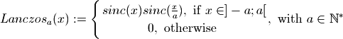

2.1.3. The discontinuous signals¶
2.1.3.1. Illustrating the issue¶
As said in Sinus cardinal interpolation as “Fourier Zero Padding”, the “Fourier zero padding” process used by Sirius is nothing more than a convolution between the input signal and a sinc kernel, as defined by the Wittaker-Shannon interpolation.
Though the sinc interpolator is seen as the best interpolator when it comes to continuous signals, it has troubles when dealing with discontinuous ones. This is obviously observed whether the interpolation has been performed spatially (by a convolution with sinc kernel) or in the frequency domain (by zero padding the spectrum):
Below are firstly defined two methods to create a rect and a sinc signals :
In [1]: def create_1D_rect(n):
...: rect = np.zeros((n))
...: rect[n/4:3*n/4] = 255
...: return rect
...:
In [2]: def create_1D_sinc(n, step=1):
...: x = np.linspace(-n/2, n/2, n*step+1)
...: N = x.size
...: sincx = 30*np.ones(N,dtype=np.float32)
...: sincx[0:N/2] = np.sin(x[0:N/2]*np.pi)/(x[0:N/2]*np.pi)
...: sincx[N/2]=1
...: sincx[N/2+1:sincx.size] = np.sin(x[N/2+1:N]*np.pi)/(x[N/2+1:N]*np.pi)
...: return x,sincx
...:
Then we can show the ringings artifacts no matter in which domain we decide to upsample (by a factor of 2 here) the data with a sinc kernel:
#define rect signal
In [3]: rect = create_1D_rect(100)
In [4]: plt.plot(rect,'.'); plt.title('The rectangular discontinuous signal');
In [5]: plt.close();
#upsample rect by a factor 2 with "fourier zero padding"
In [6]: rect_zoomed_by_zpd = zoom_freq_zpd(rect,2)
#upsample rect by a factor 2 with convolution with sinc kernel
In [7]: x, sinc_kernel = create_1D_sinc(100, step=2) #sinc is upsampled by a factor 2, otherwise it is just a dirac
In [8]: rect_odd = create_1D_rect(101) #we need odd number of samples because sinc_kernel is centered (otherwise we will have a 1 pixel shift)
In [9]: rect_zoomed_by_sinc_conv = np.zeros(rect.size * 2)
In [10]: rect_zoomed_by_sinc_conv[0::2] = np.convolve(rect_odd, sinc_kernel[0::2], mode='same')[0:rect_odd.size-1]
In [11]: rect_zoomed_by_sinc_conv[1::2] = np.convolve(rect_odd, sinc_kernel[1::2], mode='same')[1:1+rect_odd.size-1]
In [12]: plt.title('Upsampling a discontinuous signal with sinc interpolation. \n The ringings are clearly visible')
Out[12]: Text(0.5,1,'Upsampling a discontinuous signal with sinc interpolation. \n The ringings are clearly visible')
In [13]: plt.plot(rect_zoomed_by_sinc_conv, label='rect_zoomed_by_sinc_conv');plt.legend();
In [14]: plt.plot(rect_zoomed_by_zpd, '--', label='rect_zoomed_by_zpd');plt.legend();
In [15]: plt.plot(np.arange(0,rect_zoomed_by_sinc_conv.size,2), rect, '.', label='original samples');plt.legend();
This phenemenom takes the form of ripples, starting from an overshoot of the approximated values near the discontinuity and then spreading through rings. The ringings come from the fact the sinc kernel contains negative values and, as the convolution is a linear combination of the signal values with the sinc kernel weights, the result can actually go beyond the signal extrema. The damage caused by a discontinuity can go way beyond it because the sinc decays at the slow rate of .
2.1.3.2. The windowing solution¶
To avoid the artifacts described above, one solution can be to apodized the frequential filter used (in our case, the rectangular signal, which is the Fourier Transform of the sinc kernel). This process smooths the cut-off of the higher frequencies. It tends to blur the signal as the low pass filter attenuates the frequencies near the cut-off but in the time domain it reduces the oscillations of the kernel interpolator.
There are many window functions known, but for resampling purpose one of the most often used is the Lanczos one (see [Getreuer, 2011] for details about it). The Lanczos window is actually a cardinal sine function that tends to enlarge the primary lobe and reduce the other ones. It is expressed as so:

And, as shown below, reduces the number of lobes :
In [16]: a = 3
In [17]: x, sincx = create_1D_sinc(20, step=29)
In [18]: sincx_a = sinc(x/a)
In [19]: rect_lanczos = np.zeros(sincx_a.size)
In [20]: rect_lanczos[np.where((-a<x)*(x<a))] = 1
In [21]: plt.title('The Lanczos interpolation kernel')
Out[21]: Text(0.5,1,'The Lanczos interpolation kernel')
In [22]: plt.plot(x,sincx, label='sinc(x)');
In [23]: plt.plot(x,sincx*sincx_a*rect_lanczos,label='lanczos kernel a=3');
In [24]: plt.plot(x,sincx_a*rect_lanczos, '--', label='lanczos window a=3');plt.legend();
Which, as said earlier, smooths the high frequencies :
In [25]: fft_sincx = np.fft.fftshift(np.fft.fft(np.fft.ifftshift(sincx)))
In [26]: fft_lanczos = np.fft.fftshift(np.fft.fft(np.fft.ifftshift(sincx*sincx_a*rect_lanczos)))
# we only print the low-pass filter support
# -> since the sinc step (oversampling factor is 29, we keep 1/29th of the frequencies
# -> this gives 14/29th frequencies on each part of 0 frequency
In [27]: visual_margin = 10
In [28]: first = sincx.size*14/29 - visual_margin
In [29]: last = sincx.size*15/29 + visual_margin + 1
In [30]: fft_sincx = fft_sincx[first:last]
In [31]: fft_lanczos = fft_lanczos[first:last]
In [32]: frequencies = np.arange(first - sincx.size/2, last - sincx.size/2)
In [33]: plt.title('Sinc and Lanczos Fourier Transform. \nThe Lanczos kernel high frequencies cut-off is smoother');
In [34]: plt.plot(frequencies, fft_sincx, label='FT of sinc(x)');
In [35]: plt.plot(frequencies, fft_lanczos,label='FT of lanczos kernel a=3');plt.legend()
Out[35]: <matplotlib.legend.Legend at 0x7f055c6b93d0>
Hence with the lanczos kernel, upsampling the discontinuous signal (the rectangular function) gives better results than with a sinc interpolation. The following python code first unveils it in spatial domain with a convolution.
In [36]: x, lanczos_kernel=create_1D_lanczos(100, a=3, step=2)
In [37]: rect_zoomed_by_lanczos_kernel_conv = np.zeros(rect.size * 2)
In [38]: rect_zoomed_by_lanczos_kernel_conv[0::2] = np.convolve(rect_odd, lanczos_kernel[0::2], mode='same')[0:rect_odd.size-1]
In [39]: rect_zoomed_by_lanczos_kernel_conv[1::2] = np.convolve(rect_odd, lanczos_kernel[1::2], mode='same')[1:1+rect_odd.size-1]
In [40]: plt.title('Sinc and Lanczos interpolation (spatial convolution). \nThe Lanczos kernel reduces the ringings');
In [41]: plt.plot(x[0:x.size-1],rect_zoomed_by_sinc_conv,label='rect signal spatially upsampled with sinc kernel');
In [42]: plt.plot(x[0:x.size-1],rect_zoomed_by_lanczos_kernel_conv,label='rect signal spatially upsampled by lanczos kernel');plt.legend();
The previous plot shows that a wave remains. This is because our Lanczos kernel still contains negatives values (one negative lobe). It would take a non negative weights kernel to make sure the convolution is a convex combination of the original values with its weights as only then the approximated values are to be contained between the minimum and maximum of the original data used.